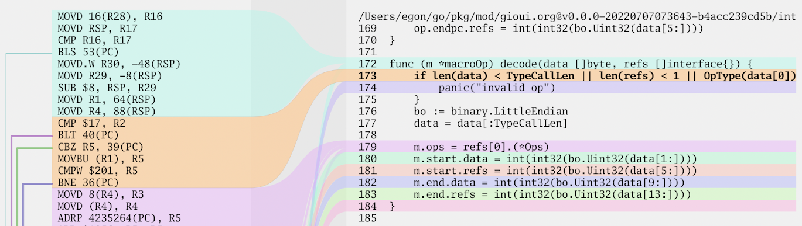

Kirill Cherniavskiy for GopherCon Singapore 2023
This one-line function executed a few millions times/sec caused GC to eat about 30% of CPU:
type container struct {
index *big.Int
}
func (c *container) updateIndex(val *big.Int) {
c.index = new(big.Int).Set(val)
}
Fix:
type container struct {
index big.Int
}
func (c *container) updateIndex(val *big.Int) {
c.index.Set(val)
}
Which tools I did use for this examples?
With gcflags:
$ go build -gcflags '-m' # simple escape analysis
$ go build -gcflags '-m=2' # more verbose analysis
$ go build -gcflags '-l' # disable inlining
$ go build -gcflags '-S' # print assembly listing
$ go tool objdump -s main.main -S example.com > main.go.s

package main
import "testing"
func BenchmarkCaseOne(b *testing.B) {
// ...
}
Be careful with interface function parameters — arguments for these parameters are often moved to heap before passing to the callee function.
type Inter interface { // like fmt.Stringer
Int64() int64
}
//go:noinline
func toInt(i Inter) int64 {
return i.Int64()
}
type inter64 int64 // implementation
func (i inter64) Int64() int64 {
return int64(i)
}
Which value is moved to the heap?
func main() {
i64_1 := inter64(1)
_ = toInt(i64_1)
i64_256 := inter64(256)
_ = toInt(i64_256)
}
//go:noinline
func toInt(i Inter) int64 {
return i.Int64()
}
Escape analysis reports that both values was moved to heap. Isn’t it?
i64_1 escapes to heap:
flow: {heap} = &{storage for i64_1}:
from i64_1 (spill) at ./main.go:50:12
from toInt(i64_1) (call parameter) at ./main.go:50:11
i64_256 escapes to heap:
flow: {heap} = &{storage for i64_256}:
from i64_256 (spill) at ./main.go:55:12
from toInt(i64_256) (call parameter) at ./main.go:55:11
i64_1 escapes to heap
i64_256 escapes to heap
The arguments for the function parameter is converted with convT64:
CALL runtime.convT64(SB)
MOVQ AX, BX
LEAQ go:itab.main.inter64,main.Inter(SB), AX
CALL main.toInt(SB)
The runtime.convT64 function may move value to heap
and returns pointer to the value:
func convT64(val uint64) (x unsafe.Pointer) {
if val < uint64(len(staticuint64s)) {
x = unsafe.Pointer(&staticuint64s[val])
} else {
x = mallocgc(8, uint64Type, false)
*(*uint64)(x) = val
}
return
}
Where staticuint64s is an array of integers from 0x00 to 0xff:
// staticuint64s is used to avoid allocating in convTx
// for small integer values.
var staticuint64s = [...]uint64{
0x00, 0x01, 0x02, 0x03, 0x04, 0x05, 0x06, 0x07,
// ...
0xf8, 0xf9, 0xfa, 0xfb, 0xfc, 0xfd, 0xfe, 0xff,
}
func main() {
i64_1 := inter64(1) // doesn't escape
_ = toInt(i64_1) // get from statucuints64
i64_256 := inter64(256) // escapes to heap
_ = toInt(i64_256) // allocate
}
Escape analyzer report is just a hint for possible heap allocation: check it to be sure.
func main() {
i64_1 := inter64(1) // MOVL $0x1, AX
_ = toInt64(i64_1) // CALL main.toInt64(SB)
}
func toInt64(i inter64) int64 {
return i.Int64()
}
func main() {
i64_1 := inter64(1)
_ = toIntGeneric(i64_1)
}
func toIntGeneric[T Inter](i T) int64 {
return i.Int64()
}
Compiler creates generic function for go.shape.int64,
where the argument is passed by value.
inter64 argument is not moved to heap.
LEAQ main..dict.toIntGeneric[main.inter64](SB), AX
MOVL $0x1, BX
CALL main.toIntGeneric[go.shape.int64](SB)
It has dynamic call → can’t be inlined:
LEAQ main..dict.toIntGeneric[main.inter32](SB), AX
; ---
MOVQ 0(AX), CX
MOVQ AX, DX
MOVL BX, AX
CALL CX
ADDQ $0x8, SP
type interPtr int64
func (i *interPtr) Int64() int64 {
return int64(*i)
}
Pointer type arguments are moved to heap for interface and generic function parameters.
func main() {
iPtr := interPtr(1)
_ = toInt(&iPtr)
_ = toIntGeneric(&iPtr)
}
//go:noinline
func toInt(i Inter) int64 {
return i.Int64()
}
func toIntGeneric[T Inter](i T) int64 {
return i.Int64()
}
No allocation for exact types:
func main() {
iPtr := interPtr(1)
_ = toIntPtr(&iPtr)
}
func toIntPtr(i *interPtr) int64 {
return i.Int64()
}
More examples in repository:
int32stringtype foo structIf function with interface parameter is inlined, compiler may not move to heap its arguments.
Actual type parameters
Interface type parameters
Generic type parameters
func with actual typesAssigning a pointer to a struct field causes heap allocation.
Example:
type foo struct {
f *int
}
func (b *foo) setDefault() {
var one int = 1 // moved to heap: one
b.f = &one
}
func (b *foo) setF(f *int) {
b.f = f
}
Both values are moved to heap:
func main() {
var b1 foo
b1.setDefault()
var b2 foo
var f int = 2 // moved to heap: f
b2.setF(&f)
}
Separate allocation and value assignment:
type foo struct {
f *int
}
func (b *foo) setVal(v int) {
*b.f = v
}
func main() {
var target foo
target.f = new(int) // call before critical path
target.setVal(2) // call on performance critical path
}
Types in math/big are a good example of a design that avoid redundant allocations.
No allocations:
import "math/big"
func main() {
one := new(big.Int).SetInt64(1)
two := new(big.Int).SetInt64(2)
three := new(big.Int).SetInt64(3)
var sum big.Int
sum.Add(&sum, one).Add(&sum, two).Add(&sum, three)
println(sum.String())
}
type Child int
type Parent struct {
C *Child
}
func (p *Parent) SetChild(c *Child) {
p.C = c
}
; c := Child(1)
LEAQ 0x4ef9(IP), AX
CALL runtime.newobject(SB)
MOVQ $0x1, 0(AX)
; p.SetChild(&c)
MOVQ AX, BX
LEAQ 0x20(SP), AX
NOPL 0(AX)(AX*1)
CALL main.(*Parent).SetChild(SB)
func (p *Parent) SetChildUnsafe(c *Child) {
p.C = (*Child)(noescape(unsafe.Pointer(c)))
}
//go:nosplit
//go:nocheckptr
func noescape(p unsafe.Pointer) unsafe.Pointer {
x := uintptr(p)
return unsafe.Pointer(x ^ 0)
}
; c := Child(2)
MOVQ $0x2, 0x10(SP)
; p.SetChildUnsafe(&c)
LEAQ 0x18(SP), AX
LEAQ 0x10(SP), BX
CALL main.(*Parent).SetChildUnsafe(SB)
It could be dangerous — use only if the child object is not accessible outside of the parent’s stack frame.
What could be slow with strings in Go.
Creating a new string from byte slice copies data to the new string.
Source code for printing “Hello, world!”:
func main() {
// bytes for "Hello, World!" string
hello := []byte{
72, 101, 108, 108, 111, 44, 32,
87, 111, 114, 108, 100, 33,
}
helloStr := string(hello)
println(helloStr)
}
And its assembly code:
LEAQ 0x30(SP), AX
LEAQ 0x23(SP), BX
MOVL $0xd, CX
CALL runtime.slicebytetostring(SB)
runtime.slicebytetostring - copies data from slice to string.
See “unsafe” package documentation (since go1.20):
unsafe.SliceData(b) - get pointer for underlying b arrayunsafe.String(ptr, l) - returns string value with b pointer as backed
bytes data pointer, and l as a string length (in bytes).Using “unsafe” package to avoid copying data from byte slice:
func main() {
// bytes for "Hello, World!" string
hello := []byte{
72, 101, 108, 108, 111, 44, 32,
87, 111, 114, 108, 100, 33,
}
helloStr := unsafe.String(unsafe.SliceData(hello),
len(hello))
println(helloStr)
}
Side effect — mutable string.
func main() {
hello := []byte{
72, 101, 108, 108, 111, 44, 32,
87, 111, 114, 108, 100, 33,
}
helloStr := unsafe.String(unsafe.SliceData(hello),
len(hello))
println(helloStr) // -> "Hello, World!"
hello[0] = 'h'
println(helloStr) // -> "hello, World!"
}
+=strings.Join()strings.Builderbytes.Buffercopy()unsafeSimple concatenation +=
func concatStringsAdd(ss []string) string {
var s string
for _, v := range ss {
s += v
}
return s
}
strings.Join()
import "strings"
func concatStringsJoin(ss []string) string {
return strings.Join(ss, "")
}
strings.Builder
import "strings"
func concatStringsBuilder(ss []string) string {
var b strings.Builder
for _, v := range ss {
b.WriteString(v)
}
return b.String()
}
Improve with Grow()
import "strings"
func concatStringsBuilderGrow(ss []string) string {
var size int
for _, v := range ss {
size += len(v)
}
var b strings.Builder
b.Grow(size)
for _, v := range ss {
b.WriteString(v)
}
return b.String()
}
bytes.Buffer
import "bytes"
func concatStringsBuffer(ss []string) string {
var b bytes.Buffer
for _, v := range ss {
b.WriteString(v)
}
return b.String()
}
With Grow()
import "bytes"
func concatStringsBufferGrow(ss []string) string {
var size int
for _, v := range ss {
size += len(v)
}
var b bytes.Buffer
b.Grow(size)
for _, v := range ss {
b.WriteString(v)
}
return b.String()
}
Just copy() bytes data
func concatStringsCopy(ss []string) string {
var size int
for _, v := range ss {
size += len(v)
}
b := make([]byte, size)
var i int
for _, v := range ss {
i += copy(b[i:], v)
}
return string(b)
}
Get rid of new allocation with unsafe:
import "unsafe"
func concatStringsCopyUnsafe(ss []string) string {
var size int
for _, v := range ss {
size += len(v)
}
b := make([]byte, size)
var i int
for _, v := range ss {
i += copy(b[i:], v)
}
return unsafe.String(unsafe.SliceData(b), len(b))
}
Concat 100 strings of 100 bytes on AMD Ryzen 7 5700U.
1.9 - 2.0 μs and 1 allocation per operation
strings.Builder with Growstrings.JoincopyActually all has almost the same implementation:
strings.Join calls strings.Builder with Growstrings.Builder uses copy and unsafe operations to build the stringJoin implementation:
func Join(elems []string, sep string) string {
// ...
var b Builder
b.Grow(n)
b.WriteString(elems[0])
for _, s := range elems[1:] {
b.WriteString(sep)
b.WriteString(s)
}
return b.String()
}
Builder implementation:
func (b *Builder) String() string {
return unsafe.String(unsafe.SliceData(b.buf), len(b.buf))
}
bytes.Buffer with Grow and copy()strings.Builder and bytes.Bufferstr += nextTo not reinvent the wheel just use strings.Join - it’s the same
as a string.Builder with Grow and copy with “unsafe”.
strings.Join() - fast and simplestrings.Builder with Grow - flexible and fastcopy with “unsafe” very flexible but the same as Join()